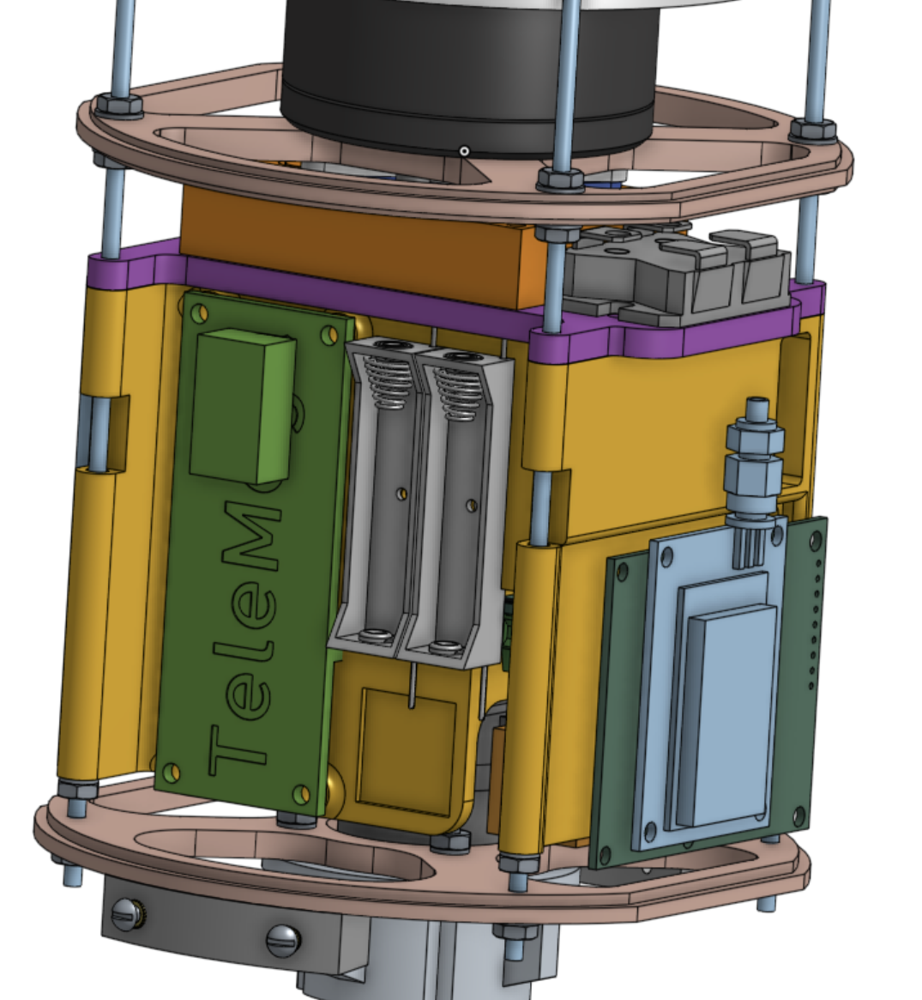
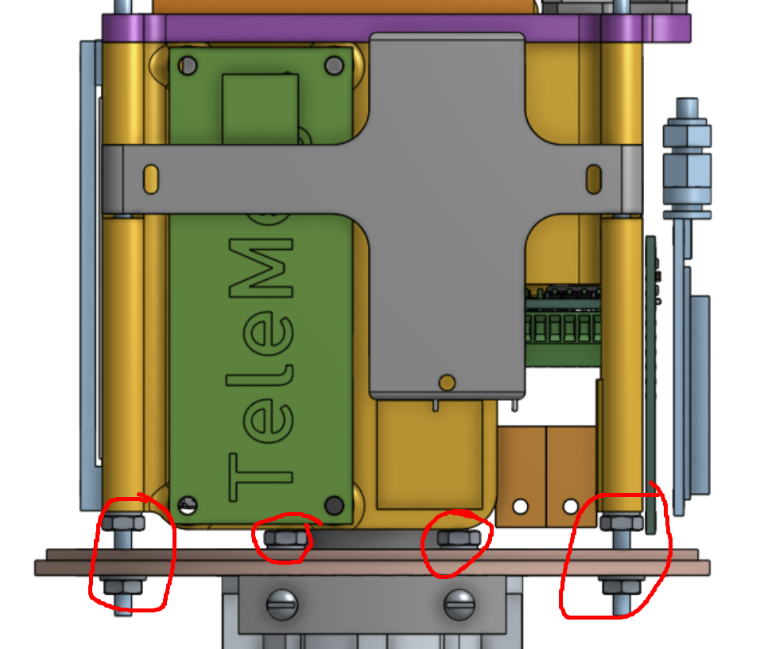

Battery Retention Sled — NUSTARS ATLAS Payload
Role: I designed the battery retention sled. The payload as a whole is the work of the NUSTARS payload team · Tools: Onshape, FDM 3D printing · Timeline: Jan 2026 – present · Northwestern University Space Technology & Rocketry Society, ESRA IREC 2025–26
{kind=link}

The ATLAS payload bay — team assembly. Two bulkheads on threaded standoffs carry the TeleMega flight computer, the cells, camera hardware and the antenna stack.

My part, installed — the grey cross-shaped plate. Its long arm clamps the cells; the wide face passes over the TeleMega and holds it down as a secondary job.
Designed the battery retention sled for the ATLAS payload of NUSTARS’ ESRA IREC competition rocket — a 3D-printed cross-shaped plate that clamps the cells against flight loads on the way to roughly 7,500 ft, using heat-set threaded inserts in the printed body and nylon-insert lock nuts at the bulkhead so the joint cannot back itself off under sustained vibration.
Problem
Everything in a rocket payload bay has to survive boost without moving. Loose cells are the worst version of that problem: they carry real mass, they sit directly against the flight computer, and if they shift under acceleration they can break a connection or damage the board next to them. The bay is also densely packed — the retention had to fit the volume left over between the TeleMega, the camera hardware and the antenna stack, without blocking access to anything the team needs to reach between flights.
Design
- Cross-shaped footprint. The plate is only wide where it needs to press. The long arm runs across the battery holders; the broad face covers the flight computer. Everywhere else the material is cut away, which keeps the part light and leaves the neighbouring components reachable.
- Two jobs, one part. Its primary function is clamping the cells. Because it already spans that face of the bay, it also sits over the TeleMega and lightly restrains it — a secondary benefit rather than the board’s main retention.
- Turned-down edges. The raised lips around the perimeter locate the plate against the components below it, so clamping load is reacted through the walls of the sled rather than by friction alone.
- Printed, not machined. FDM printing was the right call for a part this geometrically fussy in a team that iterates fast — a revision is an overnight print rather than a shop booking.
Retention and fastening
Heat-set inserts, not tapped plastic. Screwing a machine screw straight into a printed hole means cutting threads into layer lines — they strip easily, and every disassembly makes them worse. On a part that comes out repeatedly between test fits and flights, that’s a joint with a short life. Brass heat-set inserts melt into the print and give it real machine threads that carry load into the surrounding plastic instead of into a few layers, so the sled can be torn down and reinstalled without degrading.
The sled lands on four fastening points at the lower bulkhead, circled below. All four use nylon-insert lock nuts. That matters more than it sounds: a rocket airframe under boost is a sustained broadband vibration environment, and a plain nut on a smooth thread will walk loose in it. The nylon collar deforms around the thread and gives a prevailing torque that doesn’t depend on the joint staying in tension — so the retention survives the flight even if the clamped stack settles slightly.
{kind=link}

The four fastening points, circled — two outboard on the threaded standoffs, two inboard through the bulkhead.
As built
The payload as assembled on the bench — team hardware, shown for context. It is a genuinely dense bay: a LoRa radio and BMP585 barometer stacked on the printed structure, a Raspberry Pi and camera behind them, power distribution and harness routed through the middle, all captured between two machined bulkhead rings on threaded standoffs. Fitting retention into what volume remains, without blocking access to any of it, is most of the design problem.
{kind=link}
{kind=link}
Status and what I’d change
- Loads are qualitative so far. The sled was sized by judgement and by what fits, not against a calculated boost load case. The honest next step is to take the vehicle’s peak acceleration, work out the inertial load of the cells, and check the clamping arms against it — the kind of check I ran on the brake caliper, applied here.
- Print orientation deserves a second look. The clamping arms are loaded in bending, and FDM parts are weakest across layer lines. Orienting the print so layers run along the arms rather than across them is free strength.
- No test data yet. Nothing here has been vibration-tested. A shaker or even a bench tap test before the next flight would turn this from a design into a verified one.